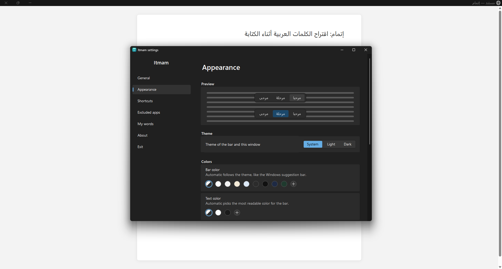

For the Windows keyboard · fully offline
Type the start of a word. Itmam finishes it.
Arabic suggestions above the caret in any app, from a dictionary of more than half a million words, learning your own words as you go.
Free and open source · Windows 10 (2004) and Windows 11 · x64 and ARM64
Made for writing Arabic
Not a spell checker and not an on-screen keyboard: a small bar above the caret while you type on your own keyboard, like on a phone.
In every app
Notepad, Word, browsers and most apps, with no setup.
Understands hamza and clitics
«احمد» finds «أحمد», «ان» suggests «أن», «إن» and «أنا», with «ال» and attached prepositions.
Learns your words
A word you use twice becomes a suggestion; the ones you use most come first.
Continues mid-word
Go back into a word with a click or Backspace and it continues from the caret.
Looks like Windows 11
A bar that follows light or dark mode, in the colors, size and opacity you choose.
Silent where it should be
Nothing in password fields, apps you exclude, or full-screen games.
All from the keyboard
Shortcuts can be changed in Settings.
| Tab | Insert the first suggestion |
| Ctrl + 1…9 | Insert a suggestion by number |
| ↑, then ← →, then Enter | Choose with the arrow keys, then insert |
| Esc | Hide the suggestions until the next word |
| Ctrl + Alt | Turn Itmam off or on from anywhere (press and release) |
As it looks on your screen
Real screenshots of the app.


Your privacy comes first
- Itmam itself never connects to the internet: no statistics, no crash reports. It only asks Microsoft Store about updates, and you can turn that off.
- Never saves what you type. For each word only the word, how often and when it was used are kept, and the short phrases you repeat with their counts, on your device.
- Reads nothing from password fields or excluded apps.
- The source code is open: anyone can check for themselves.